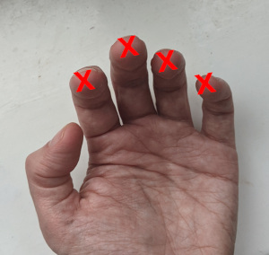
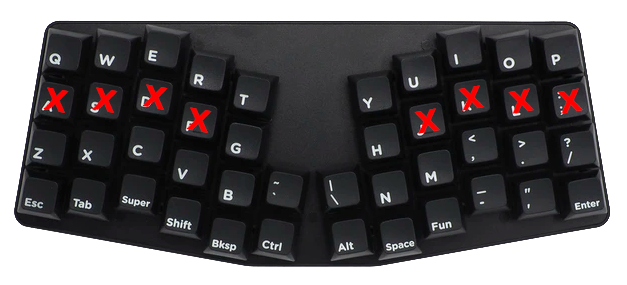

Colemak Mod-DH
A Colemak mod for more comfortable typing.
Typing Effort Grid
This page presents method of calculating a keyboard effort grid in a more objective and rigorous way than is usual, with the intention of using the results in keyboard layout analysis software. If you want to skip over the methodological details, you can jump direct to the results.
» Background
Many keyboard analyses use at their heart a way to measure the effort involved a typing each key. This typically involves considering a number of factors, such as the distance a key is from the home position and the finger being used to type the said key. Although these factors seem reasonable, they are often both simplistic and overly subjective.

NB: the analysis on the Mod-DH pages has now been updated to use the effort grids calculated on this page.
In keyboard analyses, it's not possible to eliminate personal judgement entirely, so some subjectivity will always be present. Nonetheless, the ease with which each key is typed can be considered in more detail by including several relevant factors, and using these factors to construct a systematic model.
Note, a comprehensive keyboard analysis should include more components than just an effort grid: there are influences such as bigram analysis, hand and finger balance, and rolls/alternation, which also play a part. These factors are outside the scope this article, as the focus here is on one element only: deriving a more accurate and rigorous keyboard typing effort model based on real-world hand and keyboard geometry. The Layout Analysis Tool on these pages incorporates the effort grid described here, along with some additional factors, as described on the Compare Layouts page.
» Notation
To identify keys by name, they are referred to by their Qwerty labels unless explicitly mentioned.» Finger lengths and Angle of Approach
The home key positions A S D F J K L ; are right underneath the fingers when using classic touch-tying technique. It might be imagined that natural home positions of the fingers therefore corresponds to the centre of these 8 keys. But we know the fingers are not all the same lengths. Indeed, a new generation of column-staggered keyboards has appeared which recognise hand geometry explicitly: the middle fingers are longer, the pinkies shorter, and the ring and index fingers somewhere in between. The geometry of these column-staggered keyboard can be used to inform where the relaxed home-key finger positions naturally lie. This treatement is based on the geometry of the Atreus keyboard, although other column-staggered keyboards have similar designs.
 
The hands don't approach the keyboard at right angles to the keyboard (assuming a traditional, non-split type). A comfortable posture should involve laying out the keyboard directly in front of the user, with wrists straight and forearms approaching the keyboard symmetrically and at an angle. Using the Atreus keyboard as an example, it's notable that this assumption is built-in, by virtue of the columns being laid out at a 10° angle relative to vertical. In split and widely separated keyboards, this angle would be unnecessary, but is certainly needed for single-piece keyboards.
Putting these two observations together, we can overlay the staggered key positions of the Atreus, to guide us toward more natural home positions on a standard, staggered keyboard.
| Home Key | X-displacement | Y-displacement |
|---|---|---|
| index | −0.04u | −0.32u |
| middle | +0.03u | +0.16u |
| ring | +0.00u | +0.08u |
| pinky | +0.01u | +0.09u |
What's notable is that (i) the ring and pinky finger home positions coincide closely, (ii) the middle finger home position is naturally a bit higher than the centre of the D and K keys, and (iii) the index finger home position is significantly below the centre of the F and J positions, reaching about ⅓ of a key unit towards the bottom row.
My personal observation is that this pattern corresponds closely with what I've noticed in practise. When using a traditional keyboard, it's slightly easier for the middle finger to reach the upper row, and also significantly easier for the index finger to reach down the C and M keys.
» Finger strength
Not all fingers are created equal, and there is broad agreement that the index and middle fingers are strongest, the pinkies the weakest. This applies both to the action of pressing a key, and to the curling inward/outward motion used to reach keys on the top and bottom rows; in either case there will be more strain on pinkies than index fingers for the same distance moved. Quantifying the relative strengths of each finger numerically is still a subjective matter - in this model, a finger effort factor is defined as follows:
| Finger | Effort Factor (Pf) |
|---|---|
| index | 1.0 |
| middle | 1.1 |
| ring | 1.3 |
| pinky | 1.6 |
» Lateral Motion
In common with my fork of the patorjk analyzer, this model also assumes lateral motion of the hand is more costly than simply curling a finger inward or outward. Consequently, motions that are transverse to the direction of the forearm are penalized more heavily than directions that are aligned (the mesial direction). Using the geometry of the Atreus keyboard as a guide, the angle-of-approach of the arms is set to 10° from the vertical. In this model the lateral movement multiplier (Px) is set to 2.0, making such motions more costly than moving any individual finger.
» Key size
At noted in the Finger Lengths section, the index fingers may rest over the lower part of the F and J keys rather than over the centre. Nevertheless, it's still easy for those fingers to type their respective home keys - fingers do not necessarily need to travel to the central point of a key to successfully strike it. This observation becomes especially relevant when considering larger keys: taking the left-shift key for example, the point at which it is usually pressed is significantly to the right of its midpoint. A further note on these lines is that it may be easier strike keys such as E and R slightly right of centre, to mitigate the wrong-way stagger on the left-half of traditional keyboards.
We can infer that there is an region surrounding the central point of a key where it can be successfully typed. So instead of basing distance calculations on a key's central point, it is more accurate to consider the distance to the nearest point in this activation area. In this model, the activation area is defined as a box of margin 0.3u within the key's footprint.
» Fitts's Law
Fitts's Law is a predictive model of human movement which can be used to estimate the time or effort it takes to perform a variety of actions, based on the distance and size of the target.
This observation is used to inform the model of typing. Fitts's Law suggests that the distance-based penalty should use logarithmic, rather than linear scaling, so in this model uses the formula used for the lateral distance-based penality is:
Fx = Log2 ( 1 + Pd Dx)
...where Pd is a distance-based penalty constant, Dx is the lateral distance to the target key. The formula for the mesial component (y-direction) is equivalent.
» Creating a new model
Putting all these observations together makes it possible to create a new model of keyboard effort grid for any arbitrary keyboard geometry, by calculating the effort values from base principles. In summary, the model works like this:
- The effort to type a key is depends on the finger used, the distance moved, and the type of motion that was required.
- The average motion-based effort penalty is deemed to be a combination of the mesial and lateral components of the distance from the home position. The mesial component is finger-dependent, representing the finger curling action, whereas the lateral component requires the whole hand to move.
- The home positions for each finger used in the calculation are informed by natural variation in finger length and the design of column-staggered keyboards.
- Distances are calculated based on the finger reaching the nearest point in the "activation area" rather than than the central point on a key, with the associated penalty logarithmically scaled.
- The finger used to type each key is not imposed on the model, but rather is determined automatically as the one which minimizes the effort function.
The total effort value for each key, Ptotal, is calculated with the formula:
Ptotal = Pf + dist( Pf Fy, Px Fx )
...where Pf is the finger-based penalty, Px is the lateral-movement penalty, and Fx, Fy are the two components of the distance penalty with Fitt's Law applied. The dist(x,y) function is sqrt(x2 + y2).
» Results
Standard Keyboard
Using this new model, the effort scores for each key on a standard keyboard can be calculated. The finger whose effort value is lowest is used to provide at objective indication of which finger should be used to type each key.
- The results are broadly in line with expectations, favouring home keys and strong fingers directly above and below the home positions.
- It's similar to the previous Colemak-DH effort grid shown at the top of the page, although there are some notable differences.
- The top-row left hand positions (W, E, R) are penalised more strongly than the equivalents on the right, due to the wrong-way stagger of traditional keyboards on the left-hand side. An additional consequence is that the T position is found to be significantly better than Y.
- The best non-home keys on the keyboard are still C and M, but the other bottom-row index-finger keys V and N perform better than expected too.
- The calculated finger assignments suggest ring fingers should be used for keys 2,3,0; middle fingers for 4,8,9; and index fingers for 5,6,7.
- Keys on the far-right of the keyboard are costly and should be avoided (e.g. by using mods like Extend, Wide, or both!)
Standard Keyboard with traditional finger pattern
In this case, instead of calculating the optimal finger for each key, the fingers are
- For most keys there is no difference between the traditional finger assignment and the calculated optimal assignment above.
- The most significant difference is for the bottom-row left-hand keys (Z X C), which are significantly worse if the traditional finger assignment is used.
- The results also suggest some number keys, such as 4,6,9,0 can be improved by using non-traditional finger assignment.
Matrix Keyboard
Since the model can be applied to arbitrary keyboard geometries, it's possible to calculate the effort grid for non-traditional designs, such as this matrix-like layout. In this case the board is assumed to be split, and the user is free to angle each half appropriately, so the model's 10° angle-of-approach factor is not required in this case.
- The scoring pattern is largely similar to the traditional keyboard, with most differences representing small improvements over the staggered keyboard design.
- Some keys, such as the bottom-row keys directly under index fingers' home, are even more favoured. However, the T position is notably worse.
- The calculated finger assignments are mostly in neat columns, however the model suggests using ring fingers rather than pinkies for the 1 and 0 keys.